長期トレンド
JKMとJEPXシステムプライスの推移グラフ
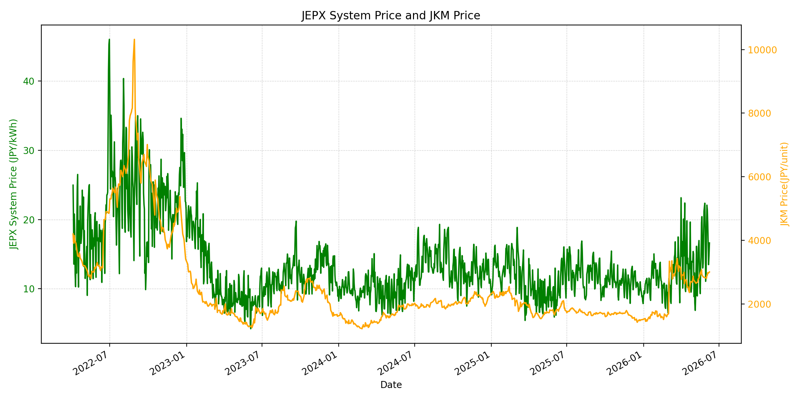
WTIの推移グラフ
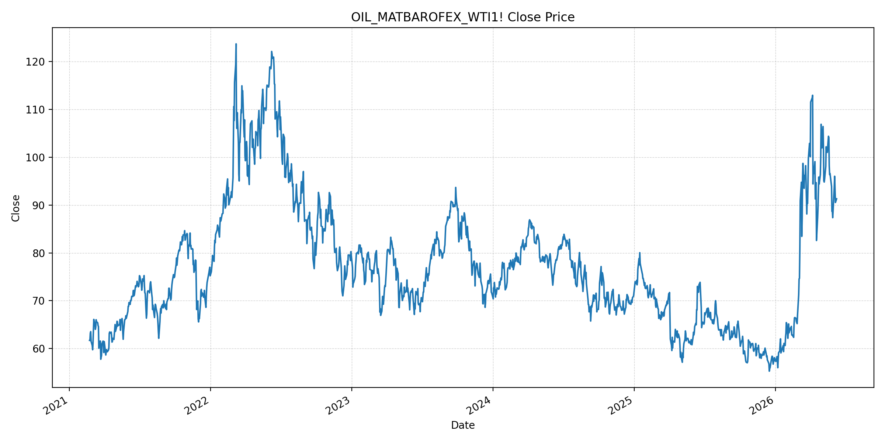
JEPXエリアプライスグラフ（直近一年分）
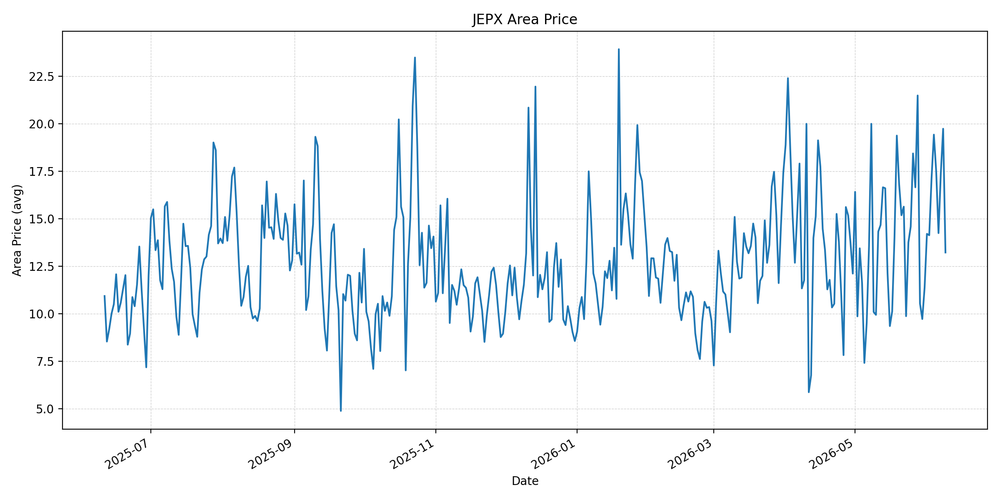
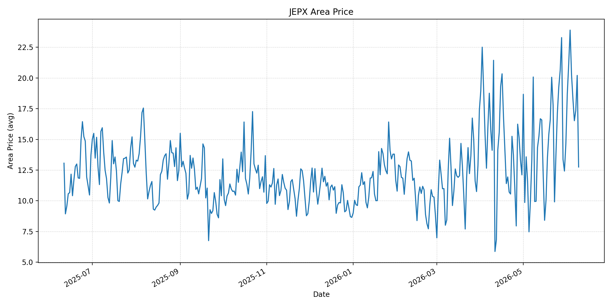
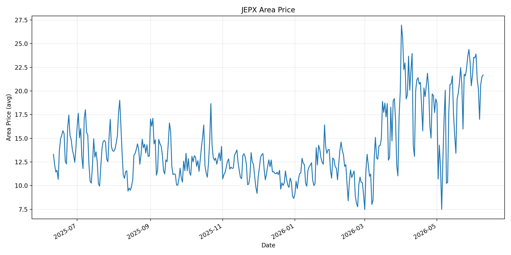
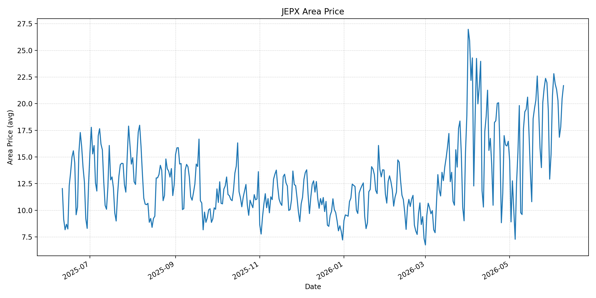
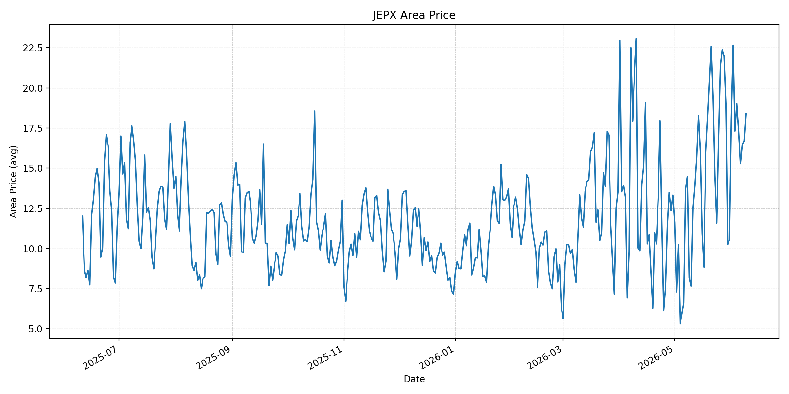
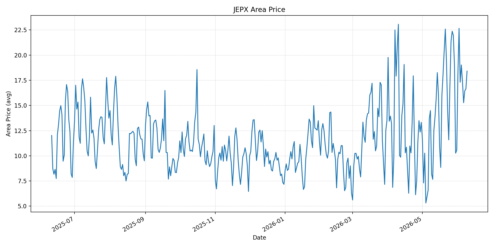
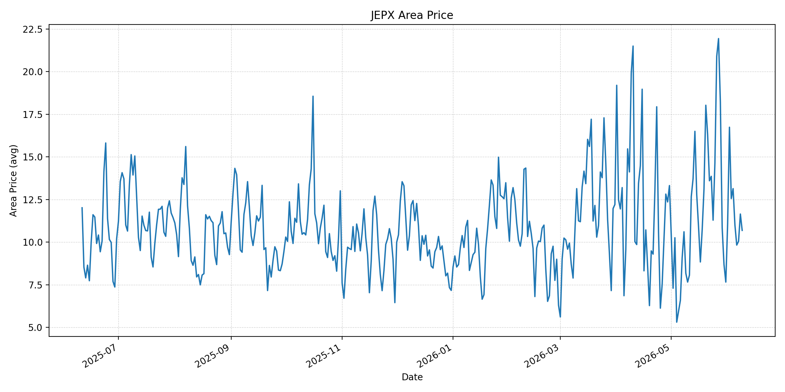
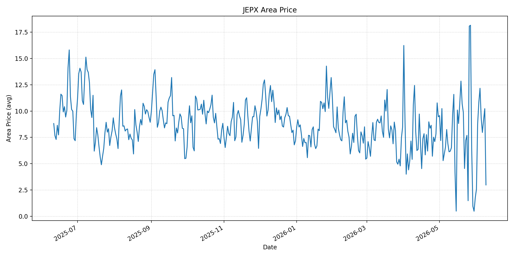
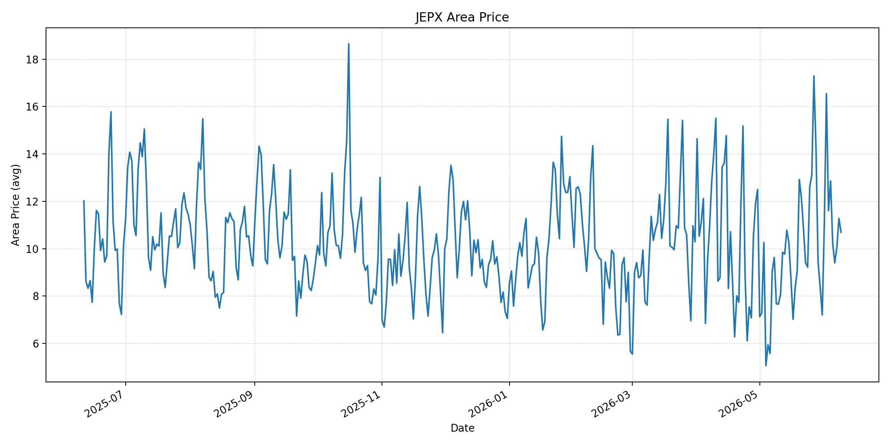
短期トレンド
JKMとJEPXシステムプライスの推移グラフ
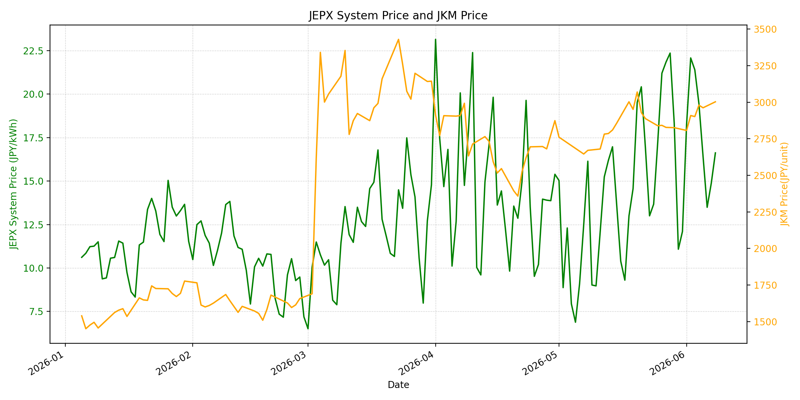
WTIの推移グラフ
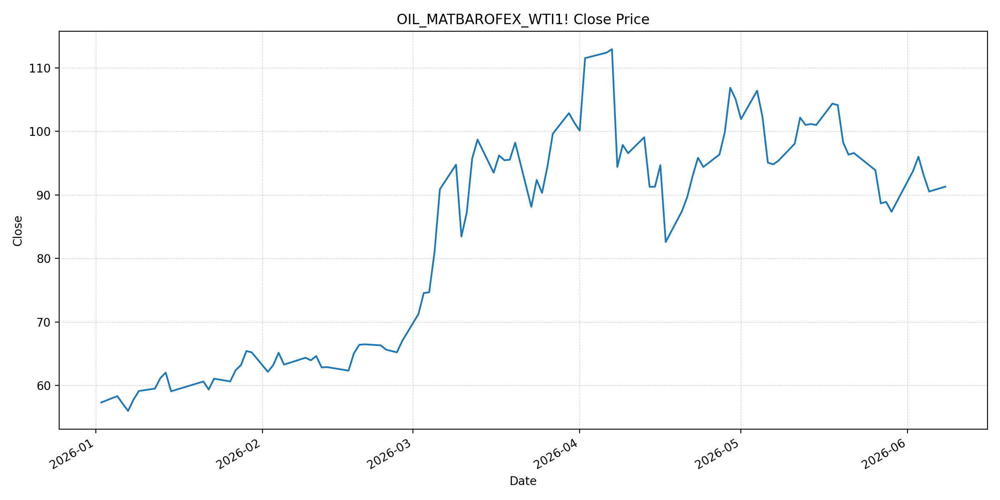
JEPXシステムプライス
JEPXは受渡日ベースの最新非空値で評価しています。最新値は 2026-06-09 分です。先週終値は 2026-06-02 時点の直近値、先月終値は 2026-05-31 時点の直近値で評価しています。
| エリア | 当日価格 | 前日価格 | 前日比（％） | 先週終値 | 先週比（％） | 先月終値 | 先月比（％） | 過去最高値 | 最高値比（％） |
|---|---|---|---|---|---|---|---|---|---|
| システム | 18.22 | 16.62 | 9.63 | 22.08 | -17.48 | 12.10 | 50.58 | 64.06 | -71.56 |
| 北海道 | 13.22 | 19.73 | -33.00 | 14.13 | -6.44 | 11.38 | 16.17 | 73.92 | -82.11 |
| 東北 | 12.75 | 20.21 | -36.91 | 21.12 | -39.63 | 14.64 | -12.91 | 84.92 | -84.99 |
| 東京 | 21.69 | 21.51 | 0.84 | 23.50 | -7.70 | 21.65 | 0.18 | 86.13 | -74.82 |
| 中部 | 21.69 | 20.48 | 5.91 | 22.81 | -4.91 | 15.25 | 42.23 | 52.06 | -58.34 |
| 北陸 | 18.41 | 16.69 | 10.31 | 22.66 | -18.76 | 10.56 | 74.34 | 46.48 | -60.40 |
| 関西 | 18.41 | 16.65 | 10.57 | 22.66 | -18.76 | 10.56 | 74.34 | 46.48 | -60.40 |
| 中国 | 10.69 | 11.65 | -8.24 | 16.74 | -36.14 | 7.66 | 39.56 | 46.48 | -77.00 |
| 四国 | 2.98 | 10.23 | -70.87 | 8.76 | -65.98 | 1.74 | 71.26 | 46.48 | -93.59 |
| 九州 | 10.69 | 11.28 | -5.23 | 16.55 | -35.41 | 7.20 | 48.47 | 40.54 | -73.63 |
LNG先物価格
最新値は 2026-06-08 の LNG(close) です。先週終値は 2026-06-01 時点の直近値、先月終値は 2026-05-29 時点の直近値で評価しています。
| 当日価格 | 前日価格 | 前日比（％） | 先週終値 | 先週比（％） | 先月終値 | 先月比（％） | 過去最高値 | 最高値比（％） |
|---|---|---|---|---|---|---|---|---|
| 3003.00 | 2962.00 | 1.38 | 2807.00 | 6.98 | 2826.00 | 6.26 | 10319.00 | -70.90 |
石油先物価格
最新値は 2026-06-08 の OIL(close) です。先週終値は 2026-06-01 時点の直近値、先月終値は 2026-05-29 時点の直近値で評価しています。
| 当日価格 | 前日価格 | 前日比（％） | 先週終値 | 先週比（％） | 先月終値 | 先月比（％） | 過去最高値 | 最高値比（％） |
|---|---|---|---|---|---|---|---|---|
| 91.30 | 90.54 | 0.84 | 92.16 | -0.93 | 87.36 | 4.51 | 123.70 | -26.19 |
ニュース
イラン情勢に関するニュース
- 2026年6月8日、APは、イスラエルとイランが4月停戦後初の交戦後に追加攻撃を一時停止したようだと報じました。双方は挑発があれば報復すると警告しており、停戦は維持されているものの脆弱です。 参照: AP, 2026-06-08
- 2026年6月8日、Axiosは、イスラエルがイランの軍事標的を攻撃したと報じました。イランのミサイル攻撃への反応であり、米国が報復抑制を求める中でも、レバノン・イラン・イスラエルの連動リスクが残っています。 参照: Axios, 2026-06-08
ホルムズ海峡経由の石油・LNGに関するニュース
- APは2026年6月8日、停戦期間中もイランがホルムズ海峡への締め付けを維持し、米軍もイラン港湾封鎖を継続していると報じました。米中央軍は、封鎖突破を試みたパラオ船籍タンカーを無力化したとも説明しています。 参照: AP, 2026-06-08
- Reutersは2026年6月6日、米軍がホルムズ海峡に向かったイランのドローンを撃墜し、ゴルクとケシュム島の監視施設を攻撃したと報じました。記事は、戦前に世界の石油交通の約5分の1が通過していた水路をイランが実質的に妨げていると整理しています。 参照: Reuters/MarketScreener, 2026-06-06
ホルムズ海峡経由でない石油・LNGに関するニュース
- 過去24時間で、日本向けの非ホルムズ新規大型調達に関する強い追加報道は確認できませんでした。直近ではKplerが、日本の2026年LNG需要見通しを64.9百万トンへ0.6百万トン引き上げ、Q2からQ3に8から10カーゴの追加需要を見込むと分析しています。 参照: Kpler, 2026年5月
- JOGMECの2026年6月1日掲載の週次では、北東アジアJKMは米イラン和平期待で下落した後、攻撃応酬と夏季需要向け調達で18ドル前半から半ばに戻したと整理されています。日本の非ホルムズ調達も、夏季需要と在庫減少の影響を受けやすい局面です。 参照: JOGMEC, 2026-06-01
日本国内のイラン戦争に関係するニュース
- 過去24時間で、JEPX制度や国内電力市場制度を直接変更する新規の強い発表は確認できませんでした。直近の国内対策として、経済産業省は2026年5月20日に、今夏は全エリアで最低限必要な予備率3%を確保できるため節電要請は実施しないと発表しています。 参照: 経済産業省, 2026-05-20
- 同発表では、国際情勢の変化、異常気象、発電所の休廃止、火力発電所の地域集中などにより、電力需給は予断を許さないとも説明されています。国内供給力の余力は確保されていても、燃料価格の上振れは卸市場へ波及し得ます。 参照: 経済産業省, 2026-05-20
インサイト
ニュース事項による日本の電力市場への影響（短期：数日〜1週間）
- JEPXシステムプライスは 18.22 円/kWhで前日比 9.63% 上昇しました。東京と中部はともに 21.69 円/kWhで、東北 12.75、四国 2.98 との差が大きく、短期では燃料ニュースだけでなくエリア需給差が価格を左右しています。
- LNGは 3003.00 と前日比 1.38%、先週比 6.98% です。APが示すホルムズ締め付けと米国封鎖の継続は、数日から1週間の燃料心理を下支えし、JEPXの反発局面で東京・中部の下値を限定しやすい材料です。
- OILは 91.30 と前日比 0.84%、先月比 4.51% です。APは交戦後の一時停止も報じていますが、Axiosが示すイスラエルの追加攻撃とReutersのホルムズ関連衝突を踏まえると、短期の価格低下はまだ確定的ではありません。
ニュース事項による日本の電力市場への影響（長期：1ヶ月〜半年）
- ホルムズ海峡の商業的正常化が遅れる場合、LNGの先月比 6.26% 上昇は夏季以降の火力燃料費に残ります。Kplerの日本LNG需要上方修正とJOGMECの夏季スポット調達見通しを合わせると、非ホルムズ調達だけで価格上振れを完全に吸収するのは難しいです。
- JEPXシステムは先週比 -17.48% ですが、先月比 50.58% と依然高いです。東京は先月比 0.18% と横ばいに近い一方、中部は 42.23% 上昇しており、1ヶ月から半年では燃料価格とエリア別需給を分けた監視が必要です。
- 経済産業省は今夏の節電要請を見送っていますが、国際情勢や火力発電所の地域集中をリスクとして明示しています。国内供給予備率が確保されても、ホルムズ通航、LNG在庫、東京・中部の20円台維持が続くかが卸価格見通しの主要論点です。